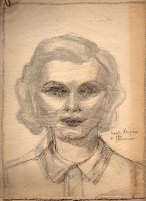
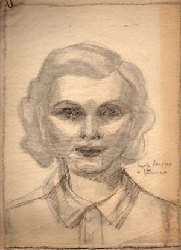
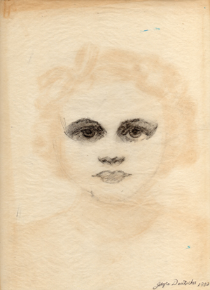
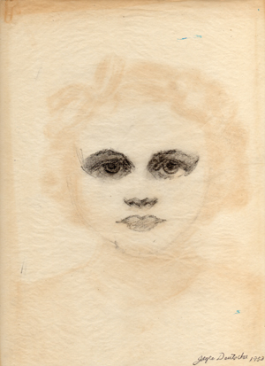
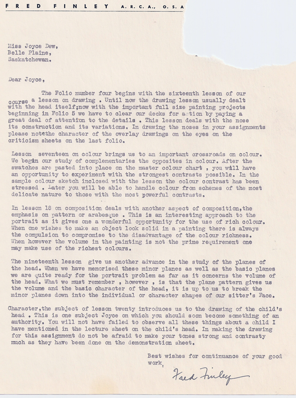

Early Portraiture
Original Image - Tissue corrections
 

 


Back to Gallery | Back to Main
Copyright 2008 Joyce Deutscher, all images are the property of Joyce Deutscher. Coded in 2008 by Nicolas Methot.
Updated 2010 by Scott Mepham.